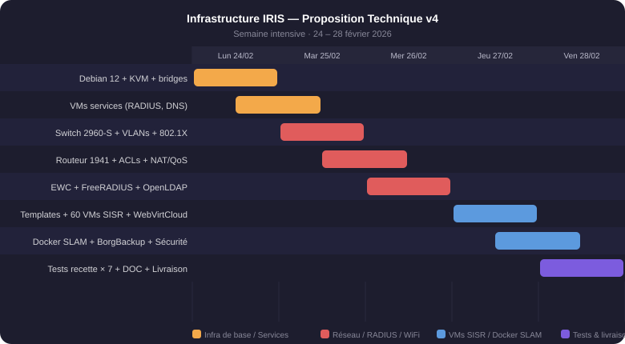

// Infrastructure réseau — PROP-IRIS-v4
Infra Réseau & Virtualisation — IRIS Nice
📅 24 – 28 fév 2026
Documentation technique
Proposition technique v4 (PROP-IRIS-v4) — École IRIS Nice, première promotion BTS SIO (SISR + SLAM). Aucune infrastructure de TP en place. Mission : déployer un environnement complet (VMs + conteneurs) avec accès réseau sécurisé, authentification individuelle et traçabilité. Budget : 50 000 €. Réalisée en binôme avec Tiago QUENETTE.
Benchmark hyperviseur (KVM natif retenu vs Proxmox/VMware/XCP-ng) — exposition des couches basses virsh/libvirt/QEMU pour les étudiants SISR. Architecture réseau : 5 VLANs (SISR/Admin/Serveurs/SLAM/Management), Cisco Catalyst 2960-S (Rapid-PVST+, 802.1X, trunks), routage inter-VLAN et ACLs IOS sur Cisco 1941W, WiFi EWC sur C9105AXI-E (WPA3-Enterprise, sans VM 9800-CL). Authentification 802.1X + FreeRADIUS 3 + OpenLDAP (attribution VLAN dynamique par groupe). Serveur Debian 12 : KVM/libvirt/QEMU + WebVirtCloud RBAC (portail par étudiant), 60 VMs SISR déployées (WS2022 8GB + Debian 12). SLAM : Docker CE natif + Dockhand. Sécurité : nwfilter anti-spoofing IP/MAC, AppArmor QEMU, snapshots + BorgBackup nightly. 7 protocoles de tests de recette. 5 livrables documentaires (DOC-01 à 05).
Compétences BTS SIO SISR mobilisées
Livrables
- PROP-IRIS-v4 (proposition technique)
- 5 documents DOC-01 à DOC-05
- 7 protocoles de tests de recette
- Schéma réseau VLAN (5 VLANs)
- Procédures d'exploitation KVM + Docker
Critères d'évaluation
Modalités de clôture
7 protocoles de recette validés. Présentation technique au jury BTS. Budget : 37 356 € TTC consommés (solde 12 644 €). Infrastructure opérationnelle pour la promo BTS SIO.
Gestion des risques
| Risque identifié | Probabilité | Impact | Mesure de mitigation |
|---|---|---|---|
| Incompatibilité matérielle des switches/NIC avec Proxmox | Moyenne | Élevé | Tests de compatibilité matérielle avant commande (HCL Proxmox) + choix de matériel certifié |
| Indisponibilité RADIUS — 802.1X bloquant tous les accès réseau | Moyenne | Élevé | Mode fallback configuré sur les ports critiques + procédure de bypass documentée pour l'équipe |
| Panne du serveur Proxmox principal (hyperviseur) | Faible | Élevé | BorgBackup nightly sur stockage externe + snapshots KVM automatisés avant chaque intervention |
| Dépassement budgétaire | Faible | Moyen | Suivi budgétaire mensuel, devis validés avant commande, solde 12 644 € conservé comme réserve |
PRA / PCA
Le plan de reprise repose sur trois mécanismes : (1) snapshots KVM automatisés avant chaque intervention critique, permettant un rollback en quelques minutes ; (2) sauvegardes BorgBackup nocturnes vers un stockage externe, garantissant RPO 24h ; (3) accès de management maintenu via VLAN dédié même en cas de défaillance des VMs de production, assurant la continuité des opérations d'administration.
Annexes
